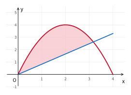
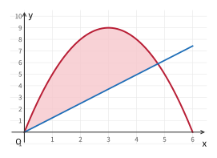
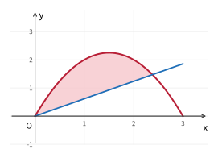

ホーム ＞ 数学II ＞ 積分法（定積分・面積）
別冊練習問題 9 の解答 放物線の面積を直線で2等分
(1) 放物線 \(y=x(4-x)\) と \(x\) 軸で囲まれた図形の面積を、原点を通る直線 \(y=mx\) (\(0<m<4\)) が2等分するとき、\(m\) の値を求めよ。
全体の面積
\(y=x(4-x)\) と \(x\) 軸：
\[\int_0^{4}x(4-x)dx=\dfrac{4^3}{6}=\dfrac{32}{3}\]直線 y=mx
放物線との交点は \(x=4-m\)。間の面積：
\[\dfrac{(4-m)^3}{6}=\dfrac12\cdot\dfrac{32}{3}\]
m を求める
\[(4-m)^3=32\ \Rightarrow\ m=4-2 \cdot 2^{\dfrac{2}{3}}=- 2 \cdot 2^{\dfrac{2}{3}} + 4\]
【答案】
\[- 2 \cdot 2^{\dfrac{2}{3}} + 4\]答
(2) 放物線 \(y=x(6-x)\) と \(x\) 軸で囲まれた図形の面積を、原点を通る直線 \(y=mx\) (\(0<m<6\)) が2等分するとき、\(m\) の値を求めよ。
全体の面積
\(y=x(6-x)\) と \(x\) 軸：
\[\int_0^{6}x(6-x)dx=\dfrac{6^3}{6}=36\]直線 y=mx
放物線との交点は \(x=6-m\)。間の面積：
\[\dfrac{(6-m)^3}{6}=\dfrac12\cdot36\]
m を求める
\[(6-m)^3=108\ \Rightarrow\ m=6-3 \cdot 2^{\dfrac{2}{3}}=- 3 \cdot 2^{\dfrac{2}{3}} + 6\]
【答案】
\[- 3 \cdot 2^{\dfrac{2}{3}} + 6\]答
(3) 放物線 \(y=x(3-x)\) と \(x\) 軸で囲まれた図形の面積を、原点を通る直線 \(y=mx\) (\(0<m<3\)) が2等分するとき、\(m\) の値を求めよ。
全体の面積
\(y=x(3-x)\) と \(x\) 軸：
\[\int_0^{3}x(3-x)dx=\dfrac{3^3}{6}=\dfrac{9}{2}\]直線 y=mx
放物線との交点は \(x=3-m\)。間の面積：
\[\dfrac{(3-m)^3}{6}=\dfrac12\cdot\dfrac{9}{2}\]
m を求める
\[(3-m)^3=\dfrac{27}{2}\ \Rightarrow\ m=3-\dfrac{3 \cdot 2^{\dfrac{2}{3}}}{2}=- \dfrac{3 \cdot 2^{\dfrac{2}{3}}}{2} + 3\]
【答案】
\[- \dfrac{3 \cdot 2^{\dfrac{2}{3}}}{2} + 3\]答